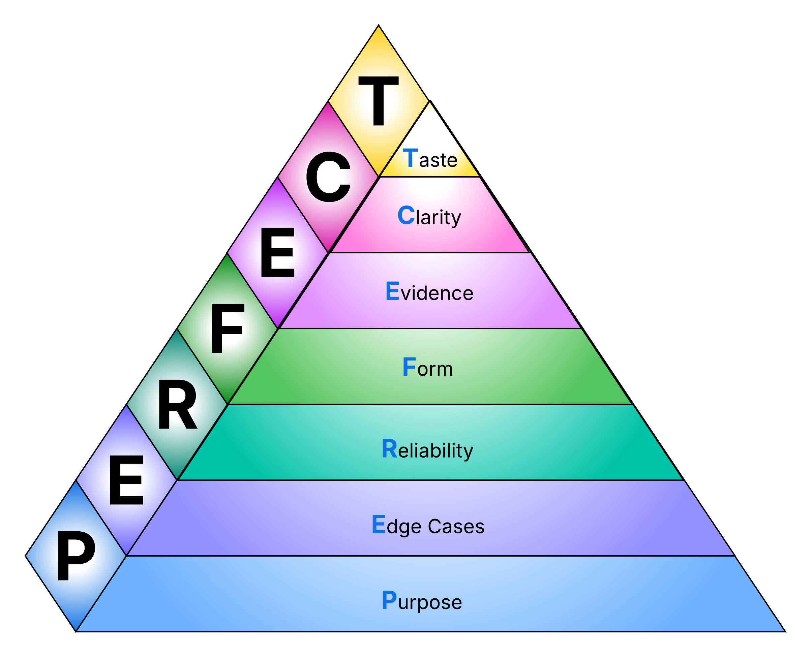

The PERFECT Code Review: How to Reduce Cognitive Load While Improving Quality
A clear, practical guide to code review: why it matters, the PERFECT principles, and how to build an effective review process.
Here we go again: you see the notification, and you feel that familiar resistance. Code Review often feels cognitively heavy and non-deterministic: too many paths to follow, too much ambiguity, too many opinions. That uncertainty breeds procrastination and bikeshedding, or, at the other extreme, drive-by approvals.
But how do you maximize the value of a review without exhausting the reviewers or trapping the team in endless debates?
I've distilled a healthy, sustainable review process into an acronym: PERFECT. It prioritizes what truly matters - from business logic and edge cases to reliability and readability - while keeping subjective opinions in check. Here is how you can apply these principles to bring structure, clarity, and consistency to your code reviews.
What is Code Review?
Code review is a process of verifying that code meets a defined set of requirements. It can be performed by another developer, by the author themselves, or with the help of automated tools.
These requirements are defined by business or technical needs. In product or custom software development, they are always ultimately driven by business goals. Such requirements may include code quality, prevention of critical issues, faster development cycles, team growth, and other factors.
For example, a developer's personal desire to write perfectly clean code is not, by itself, a valid reason for code review. However, when clean code is shown to reduce production bugs, improve overall software quality, or positively impact team motivation and maintainability, it becomes a legitimate purpose of code review. In this case, clean code turns into a business need rather than a personal preference.
Do You Really Need Code Review?
Code review may take up to 20-30% of a developer's working time, including both reviewing code and waiting for reviews. This cost can be reduced by introducing a more structured code review process, which I will describe later in this article.
Ideally, you should analyze the trade-off between the time and effort spent on code review and the business value it provides, preferably using metrics, and decide whether the resulting improvements justify that cost. Each project must find its own acceptable balance. Code review is not a collection of strict yes-or-no practices. It is a spectrum of techniques that can be applied independently of each other.
That said, the short answer is almost always yes. Even a lightweight but structured review usually costs little and delivers significant value, which makes it reasonable to use in most projects. However, if code review turns into a "cargo cult", when reviews exist only formally, approvals happen without real discussion, and no actual issues are prevented, then you simply don't need peer-to-peer review in this form. In this situation, even basic self-review is likely to be more useful than a poorly executed peer-to-peer review.
If a code review process exposes communication issues or significantly slows down delivery, teams may be tempted to abandon it altogether. While this can bring short-term relief, the long-term outcome is usually negative. A more effective approach is to address the underlying problems, such as communication gaps or an unstructured review process, rather than removing code review entirely.
PERFECT Code Review Principles
Below, I outline a set of code review principles ordered by their importance. These principles describe an ideal code review process that covers all essential aspects. They represent a general, standardized approach and can be adapted to the context of a specific project.
To make them easier to remember, I use the acronym PERFECT, where each letter corresponds to the first letter of a principle.

Important: Reviewers should always keep in mind that just because they don't like a piece of code, it doesn't mean the code is bad. If you have something to comment on, describe clearly what is wrong and why, support your feedback with concrete arguments, and propose an alternative - at least at a high level. Avoid vague statements like "this is bad". Focus on constructive, actionable feedback instead.
1. Purpose
This is the primary and non-negotiable requirement. If the code does not solve any task, it has no value and should probably not be merged at all. For a reviewer, the first step is to understand what the task is and what result the code is expected to produce. This information may come from a work-tracking ticket, the review description, or even a direct discussion with colleagues.
Once the task is clear, the reviewer should verify that the code actually solves it. A useful technique is to roughly outline how you would approach the solution and compare it with the implemented code. In any case, both the problem and the solution must be clearly understood.
Without this, the value of the review approaches zero. No matter how clean or readable the code is, it has little meaning if it does not solve the intended task.
2. Edge Cases
Try to identify both business and technical corner cases and verify that the code handles them correctly. This includes unexpected inputs, unusual calculation results, omitted requirements or conditions, boundary values, type limits, nullability, and many others. For a specific project, it may be useful to maintain a dedicated checklist.
A significant portion of production bugs is caused by overlooked edge cases. If at least one other person identifies even a few of them, the probability of production issues can be reduced dramatically.
One of the interesting types of edge cases worth paying attention to is "impossible cases." These are situations that are inherently dangerous but appear unreachable in the current state of the code. For example, accessing a value from an option or maybe type without explicitly checking its presence. This may be safe in the current state of the code, but it is often difficult to predict how future changes, especially those made without full awareness of existing assumptions, will affect this logic. In practice, such cases tend to accumulate. While a single instance may not cause problems, a larger number of them significantly increases overall risk. A good practice is to use language features as intended, enforce explicit checks, handle unexpected states explicitly, and resolve these cases before merging.
3. Reliability
Any commerce-related or mission-critical project should have strict performance and security requirements. Even if a project is not directly related to money or human safety, it is often hard to predict how it may be reused, integrated into other systems, or evolve over time. For this reason, it is a good practice to always verify that the code meets at least basic performance and security expectations. For example, that it does not introduce obvious performance bottlenecks and that public interfaces are properly secured. Even simple checks help prevent a large class of issues that would otherwise cost far more to fix later, when real problems appear in production.
From a reliability perspective, code review typically focuses on areas where failures, unsafe behavior, or degraded performance are most likely to occur. This includes time and memory complexity (appropriate for the expected data volume, execution time, and memory usage), input and output validation, credential storage, broken integrations, cache invalidation, and similar concerns. This list is not exhaustive, and project-specific checklists also work very well here.
4. Form
This alignment helps standardize representation of the code, making it easier to read and understand - both for other developers and for the original author in the future. As a result, the cost of introducing new changes, debugging, and long-term maintenance is significantly reduced.
Unlike business correctness, performance, or security, design questions tend to be more subjective. For this reason, clear arguments and shared agreements are essential to minimize non-constructive discussions and conflicts during review.
There are many well-known principles that can be applied, such as SOLID, KISS, DRY, and others. Some of them remain largely subjective, while others provide more concrete criteria and guidance. However, regardless of the specific principle, most design discussions ultimately come down to managing cohesion and coupling. For this reason, I recommend developing a solid understanding of these concepts and applying the High Cohesion / Low Coupling principle in the context of your project, treating other design principles as examples or specific interpretations of this core idea.

5. Evidence
Tests make debugging, refactoring, and introducing new changes easier, while reducing the number of production bugs and improving overall stability. Automated CI pipelines help partially automate code review and ensure that the code is in a correct and deployable state.
If tests, build pipelines, or other automated checks exist, they must pass. Otherwise, the entire code review may lose its value, since fixing broken pipelines may introduce significant changes that require re-reviewing the code. Moreover, if tests or pipelines are permanently broken or ignored, it usually means they are no longer actively used, contain outdated behavior, and may cause more confusion than benefit. In such cases, it is often better to just remove them.
If there are established agreements around writing tests, changes should be covered by tests accordingly. These tests also need to be reviewed using the same principles as production code. At a minimum, they should validate the intended logic, follow agreed structure and conventions, and have acceptable performance. Ideally, production code should not include special logic written only for testing. Instead, the codebase should be designed in a way that naturally enables easy and reliable testing.
6. Clarity
Different people have different ways of reading and understanding code, different backgrounds, and different levels of experience. As a result, code clarity is often subjective, and it is difficult to write code that is equally easy to understand for everyone. Still, we should strive to make the intent of the code as clear as possible. Ideally, the code should be understandable without reading every single line - it should be possible to read it diagonally. This significantly simplifies and reduces the cost of review, maintenance, debugging, and introducing new changes.
Clear agreements help a lot here. They may include conventions for naming, file structure (a good criterion is the ability to find things without search), block length, nesting, statement order, documentation, use of comments, and others.
If there are no agreed objective criteria and the code is not explicitly unclear, I prefer to leave these decisions to the author, even if I personally disagree with some choices. In practice, such details are rarely critical, but pushing a personal opinion too hard often creates unnecessary tension during review.
7. Taste
Every reviewer brings their own development habits and personal preferences. The fewer written review agreements a team has, the more opinionated review comments tend to appear. Such comments slow down the review process, create unnecessary friction, and may eventually lead to code inconsistency.
At the same time, many of these comments still make sense and can point to real issues. They should not be ignored entirely. However, it is important to set clear expectations: if a reviewer's comment is not supported by clear reasoning and a constructive proposal, the author may choose not to address it. Valuable opinions can later be revisited and turned into shared agreements. Once something becomes an agreement, it does not have to be fully objective - it simply becomes a part of how the team works.
How to Make It Actually Work
Knowing proper code review principles and consistently acting on them are two very different things. While there is no universal recipe that works for every team, I can provide you with several basic but effective recommendations.
The main goal is to make code review not a cognitively demanding activity that drains excessive resources from developers, but a clear and routine process. Ideally, reviewers should follow a set of predefined conventions instead of overthinking or procrastinating, paying more attention to actual problems and achieving even higher overall quality of review.
-
Establish written review conventions.
These should include the principles described above, their concrete implementation in the context of your project, and any other aspects you want reviewers to pay attention to.
-
Keep conventions up to date and actionable.
All criteria should be usable during review at any moment. Whenever you notice a recurring review pattern (comment → discussion → fix), turn it into a convention.
-
Require self-review before peer review.
Everyone should perform self-review using the same conventions before sending code for review by others. This saves time for all participants and helps reviewers build experience and efficiency over time.
-
Integrate code review into the development process.
Define clear rules for selecting reviewers, the number of reviewers, how comments are written and resolved, how updates are communicated, approval rules, review status visibility, and review SLAs. There should be a clear answer to common questions around code review, instead of uncertainty, anxiety, and unnecessary stress.
-
Automate everything that can be automated.
-
Stop approving with "LGTM".
"LGTM" (Looks Good To Me) often signals that the reviewer did not fully understand the changes and simply wants to move on. While reviewers are not responsible for the final outcome of approved code, such approvals reduce the value of the review itself.
-
Practice code review whenever possible.
Code review is a skill that improves through deliberate practice. The more experience reviewers gain, the less effort reviews require and the more effective they become. This can be supported through attention to structure, constructive feedback, short workshops, and other focused practices.
Do You Really Need All the Principles?
Even if you do not intend to use all of these principles in practice, understanding them is still useful. They help to shape a technical vision, support informed discussions, and bring structure to the code review process by clarifying when different approaches make sense.
As mentioned earlier, code review is not a single technique but a spectrum of practices. The principles described above help to maximize the benefits of code review in general. However, in a specific project, some approaches may require more effort than the value they deliver. In such cases, it is reasonable to selectively apply only those practices that are truly beneficial in the context of your project.